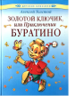

Золотой Ключик, или Приключения Буратино

На замечательной сказке Алексея Николаевича Толстого "Золотой ключик, или Приключения Буратино" выросло не одно поколение. Написанная более семидесяти лет назад, история озорного, веселого и доброго деревянного человечка по-прежнему волнует и радует наших мальчишек и девчонок.